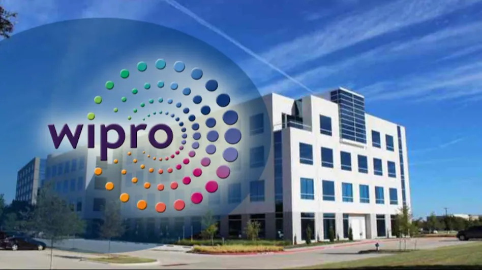
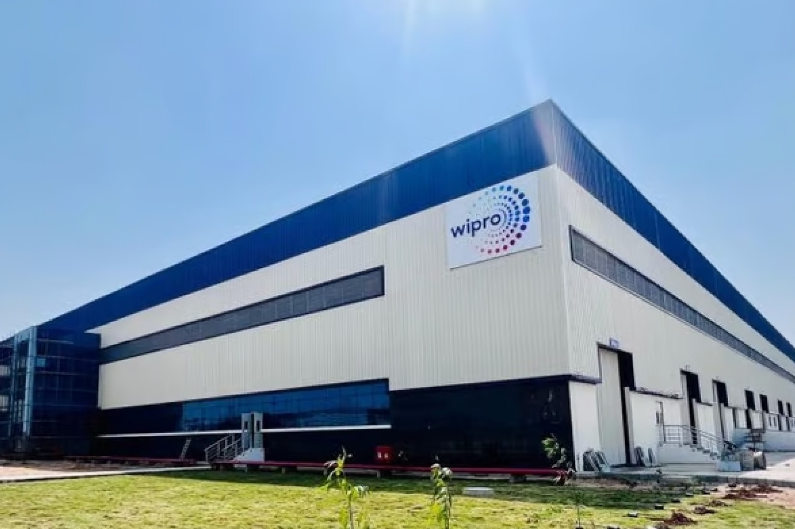

City : Hyderabad
Service Based Company





Wipro Limited (NYSE: WIT) is a leading global IT, consulting, and business process services company headquartered in Bengaluru, India. With over 240,000 employees globally, it specializes in artificial intelligence, digital transformation, and cloud solutions. Wipro trades on the NSE, BSE, and NYSE.
Wipro is a global information technology, consulting, and business process services (BPS) company. It provides end-to-end digital transformation, cloud computing, cybersecurity, data analytics, artificial intelligence (AI) integration, and enterprise application services.
Wipro Limited is a leading global AI-powered technology services and consulting company that helps businesses across the world navigate their complex digital transformation needs. Headquartered in Bengaluru, India, Wipro employs over 240,000 people across 65 countries, offering high-tech solutions to industries like banking, healthcare, manufacturing, and retail.
📍 Address : 203/1, SEZ, Gachibowli, Manikonda, Hyderabad, Telangana 500032, India.
🌐 Official Website : Wipro Official Website
📍 Address : Survey No. 124 & Part of 132/P, SEZ, Gopanpally, Hyderabad, Telangana 501301, India.
📞 Phone : +91 40 4063 0113
📧 For business inquiries, you can use the official contact page : Wipro Contact Us


Amazon.com, Inc. is an American multinational technology giant recognized as the world's largest online retailer and cloud computing provider. Founded by Jeff Bezos in 1994, the company started as an online bookstore out of a garage in Bellevue, Washington. Today, it stands as one of the "Big Five" American information technology companies, with a market capitalization exceeding $2 trillion.
Founding & Headquarters : Established on July 5, 1994, by Jeff Bezos. The corporate headquarters are located in Seattle, Washington.
Current Leadership : Andy Jassy serves as the President and Chief Executive Officer (CEO). Jeff Bezos transitions to the role of Executive Chair.
Corporate Mission : To be "Earth's most customer-centric company, Earth's best employer, and Earth's safest place to work".
E-Commerce & Retail : Features a hybrid model combining direct retail sales and a massive third-party seller marketplace. The company owns physical retail chains, notably Whole Foods Market, which it acquired in 2017.
Amazon Web Services (AWS) : The world's most comprehensive and broadly adopted cloud platform. While retail drives revenue, AWS is Amazon's primary profit generator, capturing roughly one-third of the global cloud market.
Digital Streaming & Entertainment : Includes the movie and TV streaming service Prime Video, the live-streaming platform Twitch, and premium audio service Audible.
Consumer Electronics & AI : Develops household tech ecosystems under brands like Kindle e-readers, Echo smart speakers, Fire TV devices, Ring security systems, and the Alexa virtual assistant.
Prime Ecosystem : Over 200 million paid subscribers globally utilize Amazon Prime for expedited delivery, streaming, and exclusive savings.
Global Footprint : The company ships to over 100 countries and is the second-largest private employer in the United States.
Massive Traffic : The consumer storefront at Amazon.com averages over 2.2 billion digital visits per month.
Amazon is a global technology conglomerate that has evolved from an online bookstore into the world's largest e-commerce platform and a dominant force in cloud computing, digital streaming, and artificial intelligence. The company organizes its extensive ecosystem into several key service categories.
Amazon Store : The core global consumer marketplace offering millions of products directly and via third-party merchants.
Amazon Prime : A premium subscription service bundling fast, free delivery with digital entertainment access.
Amazon Business : A specialized wholesale marketplace tailored for business purchasing, corporate gifting, and bulk discounts.
Physical Retail : Physical shopping footprints managed through subsidiaries like Whole Foods Market and Amazon Fresh.
AWS is Amazon's highly profitable cloud computing division, providing more than 240 fully featured on-demand IT services to startups, enterprises, and governments.
Compute & Serverless : Virtual server renting via Amazon EC2 and event-driven computing with AWS Lambda.
Storage & Databases : Scalable object storage through Amazon S3 alongside fully managed database clusters.
Artificial Intelligence : Enterprise deployment of advanced foundational models and custom generative AI systems via Amazon Bedrock.
Prime Video & MGM Studios : A premium streaming platform distributing original movies and live sports.
Amazon Music : A digital music streaming catalog containing ad-supported and premium subscription tiers.
Audible : The industry-leading production and distribution platform for digital audiobooks.
Twitch : A global live-streaming platform focused primarily on gaming, esports, and creative content.
Fulfillment by Amazon (FBA) : A merchant service where Amazon handles storage, packing, shipping, and customer support.
Amazon Supply Chain Services : An end-to-end global enterprise service that opens Amazon's freight, warehousing, and delivery infrastructure to any business.
Delivery Service Partner (DSP) : A program empowering local entrepreneurs to launch and manage independent delivery fleets using Amazon logistics.
Echo & Alexa : Smart speaker lines integrated with an AI-driven voice assistant for home automation.
Fire TV & Tablets : Affordable streaming media hardware and entertainment-focused tablet devices.
Kindle : Direct e-reader hardware integrated with Kindle Direct Publishing for independent authors.
Ring & Blink : Smart home security camera hardware ecosystems and cloud recording services.
Amazon Pay : A digital transaction wallet allowing users to pay for orders on and off the Amazon marketplace.
Amazon Pharmacy : Healthcare prescription management and home delivery, including flat-rate subscription models like RxPass.
Amazon is a global technology and retail giant guided by four core principles: customer obsession, a passion for invention, operational excellence, and long-term thinking. The company impacts and "helps" various groups—including everyday shoppers, small business owners, job seekers, and local communities—through its vast ecosystem of services.
E-commerce & Logistics : Offers a massive marketplace with millions of products, supported by Amazon Prime Benefits providing free fast shipping, video streaming, and digital perks.
Customer Support & Guarantees : Protects consumers with policies like the A-to-z Guarantee for third-party purchases and dedicated Amazon Customer Service Help portals for tracking, returns, and refunds.
Smart Living : Simplifies daily tasks using voice AI via Alexa and Echo devices, alongside secure digital payment solutions through Amazon Pay.
Independent Sellers : Provides an online storefront that helps artisans and small brands scale up, allowing a record number of independent sellers to surpass $1 million in sales.
Logistics Partnerships : The Amazon Delivery Service Partner (DSP) Program provides capital, tools, and training for local entrepreneurs to build their own delivery companies.
Cloud Infrastructure : Through Amazon Web Services (AWS), it equips startups and massive companies alike with scalable cloud computing infrastructure and AI tools.
Day-One Benefits : Provides comprehensive healthcare coverage (including medical, dental, and vision), life insurance, and mental health programs from day one for regular full-time employees.
Career Growth & Upskilling : Offers the Amazon Career Choice Program, which pre-pays college tuition and certificates for high-demand, high-paying career tracks like data science or logistics.
Economic Investment : Drives job creation across manufacturing, technology, and operations globally, such as massive infrastructure expansions in the US and India.
Disaster Relief : Uses the global Amazon Air and logistics network to deliver emergency supplies (like food, generators, and water filters) quickly to communities hit by natural disasters.
Social Impact : Partners with local food banks to leverage its delivery grid for free meal distribution, and invests billions in Housing Equity Funds to build affordable homes.
The Climate Pledge :Co-founded a commitment to reach net-zero carbon emissions by 2040, driving transitions toward renewable energy and sustainable packaging.
Shopping Platform : amazon.in
Customer Support : Amazon India Contact Centre
Corporate & News Info : About Amazon India
General Toll-Free Support : 1800-1200-9009 or 1800-3000-9009
Amazon Pay Helpline : 1800-1200-1571
Seller Support Helpline : 1800-419-7355
This is Amazon's largest owned corporate building globally.
Address : Survey No. 115/1, Financial District, Gachibowli, Nanakramguda, Hyderabad, Telangana 500032
Address : Building No. 12C, Mindspace Madhapur IT Park, Raheja Mindspace, HITEC City, Hyderabad, Telangana 500081
Branch Phone : +91-9182528782